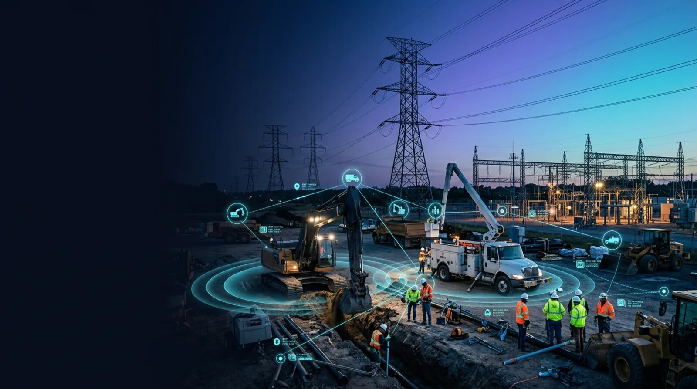

Improve crew visibility, asset tracking, material management, access verification, and construction progress across power lines, pipelines, substations, and underground utility infrastructure using RFID, BLE, GPS, and LoRaWAN technologies.

Utility construction projects involve geographically distributed work zones, multiple contractors, specialized equipment, thousands of materials, and strict regulatory requirements. Every stage, from right-of-way preparation and trench excavation to conduit installation, cable pulling, utility pole erection, pipeline welding, substation construction, and final commissioning, requires accurate identification, location awareness, and coordination among field personnel and project managers.
UtilCon AI delivers an enterprise AI and IoT solution designed specifically for utility construction organizations building electrical transmission systems, underground distribution networks, natural gas pipelines, water pipelines, fiber optic corridors, substations, and utility infrastructure. Rather than relying on manual documentation and fragmented tracking methods, construction teams gain continuous visibility into workforce movement, material locations, equipment utilization, work progress, and project documentation across active construction corridors.
The solution combines Artificial Intelligence with IoT identification technologies including RFID, BLE, GPS, and LoRaWAN to improve workforce coordination, asset accountability, material availability, project documentation, and field execution while supporting safe and compliant utility construction operations.
Artificial Intelligence of Things, commonly called AIoT or AI and IoT, combines artificial intelligence with connected identification devices, industrial equipment, wireless communications, and field data to support informed operational decisions.
Utility construction presents unique operational challenges that differ significantly from conventional commercial construction. Projects often span many miles of transmission corridors, pipeline rights-of-way, underground utility routes, substations, switching stations, and remote access locations. Construction activities frequently involve numerous subcontractors, specialized vehicles, heavy equipment, temporary storage yards, spool yards, staging areas, and continuously changing work fronts.
These operating conditions create significant demands for:
UtilCon AI addresses these requirements through AI-assisted identification and location solutions that help construction organizations improve operational efficiency while reducing manual reporting activities.
This workflow diagram illustrates how AI and IoT connects utility construction field operations with project management. It shows utility crews, RFID-tagged assets, BLE-enabled personnel tracking, GPS-monitored vehicles, and cloud-based project management software working together to provide real-time visibility, construction progress monitoring, asset identification, workforce coordination, and engineering collaboration across utility infrastructure projects.
Power utility and pipeline construction projects typically progress through multiple execution stages, each requiring accurate coordination between field personnel, engineering teams, material suppliers, contractors, inspectors, and project owners.
Typical construction activities include:
Every activity generates operational information that must be associated with specific personnel, equipment, work packages, construction locations, and installation records.
Traditional paper-based reporting, spreadsheets, and disconnected software often make this information difficult to organize across large construction projects. Missing documentation, misplaced materials, delayed inspections, and inconsistent reporting may contribute to schedule delays and increased project costs.
UtilCon AI helps construction organizations establish consistent digital identification throughout the project lifecycle, improving operational visibility while supporting quality assurance, contractor coordination, and regulatory compliance.
Unlike generic construction management software, UtilCon AI focuses specifically on the operational characteristics of utility infrastructure construction.
Projects commonly involve linear infrastructure extending over long distances, temporary staging yards, mobile work crews, specialized installation equipment, and materials that continuously move between suppliers, storage facilities, and active construction zones.
Examples include:
Each environment requires accurate identification of people, equipment, construction materials, and installation progress throughout every stage of project execution.
Rather than replacing existing enterprise systems, UtilCon AI complements engineering, ERP, project management, maintenance, and work order software by providing reliable identification and location information collected directly from field operations.
Utility construction organizations can apply AI and IoT identification technologies across numerous project environments while maintaining consistent operational workflows and standardized documentation.
Common applications include:
Each project benefits from improved workforce coordination, asset identification, material accountability, installation verification, and project documentation throughout the construction lifecycle.
Utility construction depends on knowing who is on site, what materials are being installed, where critical assets are located, and when construction milestones are completed. UtilCon AI emphasizes identification and location solutions over traditional sensing approaches, helping contractors maintain accurate records across dynamic field environments.
The solution incorporates technologies such as RFID for crew badges and tagged materials, BLE for proximity awareness, GPS for fleet and equipment location, and LoRaWAN where long-range connectivity supports distributed construction corridors. AI analyzes these identification events to improve project coordination, verify work execution, and assist managers in making timely operational decisions without disrupting existing construction workflows.
Verify personnel identity, monitor authorized site access, and maintain digital workforce records across distributed projects using RFID crew badges, BLE proximity, GPS vehicles, and secure access readers.
Maintain accurate identification of utility poles, cable reels, transformers, conduit, pipe segments, switchgear, and heavy equipment through RFID asset tags, BLE identifiers, and GPS tracking.
Associate personnel, materials, equipment, and completed activities with digital construction records supporting work package verification and installation traceability.
Utility construction projects rely on highly coordinated field teams working across transmission corridors, pipeline rights-of-way, substations, and underground utility installations. Multiple contractors, subcontractors, inspectors, engineers, equipment operators, and safety personnel often move between active work zones throughout the day. Maintaining accurate records of who is authorized to enter specific areas and where crews are working helps improve project coordination while supporting safety and regulatory requirements.
UtilCon AI provides AI and IoT software that enables construction organizations to verify personnel identity, monitor authorized site access, and maintain digital workforce records across geographically distributed projects. Using RFID crew badges, BLE proximity technologies, GPS-enabled field vehicles, and secure access readers, the solution creates a reliable digital record of workforce movement throughout the construction lifecycle.
Construction managers can quickly determine:
Digital workforce verification reduces reliance on paper sign-in sheets while improving coordination between field supervisors, project managers, and safety teams.
Utility infrastructure projects frequently involve numerous specialty contractors responsible for excavation, directional drilling, pole erection, cable installation, welding, electrical testing, restoration, and commissioning. Managing access permissions for different organizations can become increasingly complex as projects expand.
UtilCon AI supports contractor management by maintaining digital records for:
Construction organizations gain a centralized record of workforce activity without interrupting normal field operations.
Utility construction depends on the timely movement and installation of thousands of materials across multiple job sites. Utility poles, transformers, cable reels, conduit sections, switchgear, valves, fittings, manholes, vaults, prefabricated assemblies, and heavy construction equipment continuously move between suppliers, storage yards, staging locations, and active work fronts.
Maintaining accurate identification throughout this process helps reduce misplaced assets, material shortages, duplicate purchases, and installation delays.
UtilCon AI supports digital identification throughout material handling activities using RFID asset tags, BLE identifiers, barcode integration where appropriate, GPS vehicle tracking, and AI-assisted material management software.
Project teams can maintain accurate records for:
Each identified asset becomes part of a continuously updated project record that supports procurement, logistics, construction scheduling, and commissioning activities.
Linear utility construction creates logistical challenges that differ significantly from building construction. Materials may travel dozens or hundreds of miles before installation while being transferred between manufacturers, warehouses, transportation companies, temporary laydown yards, and active work locations.
Digital identification helps maintain visibility throughout material movement by recording:
Project managers gain greater confidence that critical materials are available when scheduled construction activities begin.
Utility construction projects depend on specialized equipment that often operates across multiple job locations during the same project. Excavators, directional drilling systems, cranes, bucket trucks, tensioners, pullers, welding machines, vacuum excavators, compressors, generators, and service vehicles represent significant operational investments.
UtilCon AI helps construction organizations improve equipment visibility by maintaining digital identification records associated with project assignments and operating locations.
Organizations can review:
Improved equipment accountability helps reduce unnecessary rentals while improving project scheduling accuracy.
Large utility infrastructure projects require accurate documentation throughout every construction phase. Engineering teams, project owners, regulators, and quality assurance personnel often require verification that construction activities have been completed according to approved work packages.
Rather than relying entirely on manual reports, UtilCon AI associates identified personnel, materials, equipment, and completed work activities with digital construction records.
Examples include:
AI-assisted analysis helps organize these records into structured project documentation that supports quality management and project reporting.
Utility projects are typically divided into work packages covering specific geographic sections or installation activities. Supervisors must verify that assigned tasks have been completed before subsequent construction activities begin.
UtilCon AI helps associate workforce records, identified assets, and completed activities with corresponding work packages, supporting more consistent project documentation while reducing administrative effort.
Utility owners often require long-term documentation identifying where critical infrastructure components have been installed and who performed the work.
Examples include:
Digital identification records allow construction organizations to maintain installation histories that remain valuable during future maintenance, inspections, upgrades, and regulatory reviews.
Where project specifications require documented installation records, UtilCon AI supports traceability by associating identified assets with installation dates, work crews, project locations, and construction documentation.
Utility construction companies operate under a wide range of IT requirements. Some organizations manage projects using centralized cloud environments, while others require local infrastructure because of internal security policies or customer requirements.
UtilCon AI supports flexible deployment options that integrate with existing construction management processes.
Cloud deployment enables project teams working across multiple construction regions to securely access project information through centralized software.
Benefits include:
Organizations requiring local infrastructure can deploy UtilCon AI on dedicated servers within their own environments.
This option supports:
Both deployment models are designed to integrate with existing ERP systems, work order software, document management systems, GIS applications, and construction management solutions without requiring organizations to replace established operational workflows.
Successful utility construction depends on timely communication between field operations and office-based engineering, procurement, scheduling, and project management teams.
UtilCon AI helps connect construction activities with office operations by providing consistent digital identification records that support:
This coordinated approach enables project stakeholders to make informed decisions using accurate operational information while maintaining visibility across complex utility construction programs.
Utility construction projects demand solutions that reflect the realities of field operations rather than generic office workflows. Crews operate across transmission corridors, pipeline rights-of-way, underground utility routes, substations, and temporary staging yards where work locations change frequently and construction schedules depend on accurate coordination of personnel, equipment, and materials.
UtilCon AI has been developed to support these operational requirements by combining practical industry experience with enterprise AI and IoT technologies focused on identification and location. The solution is designed to complement existing engineering, construction management, GIS, ERP, and document control systems, allowing organizations to strengthen operational visibility without disrupting established business processes.
Organizations using standardized identification practices can improve coordination across multiple contractors, simplify project reporting, and maintain consistent records throughout the construction lifecycle.
UtilCon AI is developed within Aperture Venture Studio, with support from GAO, drawing upon more than two decades of IoT experience serving thousands of customers and successfully delivering thousands of IoT projects across industrial sectors, including utility infrastructure and construction operations.
This experience has contributed to substantial investments in research and development, rigorous quality assurance practices, and comprehensive technical support delivered remotely or onsite. The organization is led by Ph.D. professionals from leading universities and is supported by industry experts, strategic partners, and technology investments that strengthen long-term product development.
Over the years, related organizations have supported numerous Fortune 500 companies, leading research institutions, prestigious universities, and government agencies across the United States and Canada. This foundation enables UtilCon AI to deliver technically accurate, operationally practical solutions for utility construction environments.
Construction organizations require dependable systems that integrate with existing operational processes while supporting workforce management, material accountability, project documentation, and regulatory compliance.
UtilCon AI is designed to help organizations achieve these objectives through practical identification and location technologies.
Key advantages include:
Rather than introducing unnecessary complexity, the solution focuses on improving operational accuracy and supporting informed decision-making throughout every stage of construction.
AI and IoT identification technologies provide measurable value from project mobilization through final commissioning and project closeout.
Organizations can realize operational improvements such as:
These benefits support more predictable project execution while reducing administrative overhead and improving collaboration among construction stakeholders.
UtilCon AI supports a broad range of utility infrastructure projects where identification, location, and documentation are essential to operational success.
Common applications include:
Each application benefits from standardized digital records that improve coordination across engineering teams, contractors, suppliers, inspectors, and project owners.
Every utility construction project presents unique operational challenges, from managing workforce access and coordinating specialized equipment to maintaining accurate material records and documenting construction progress. Selecting the right identification and location strategy depends on project scope, regulatory requirements, infrastructure type, and existing business systems.
The UtilCon AI team works with construction organizations to evaluate operational workflows, identify opportunities for improved visibility, and recommend AI and IoT solutions that align with project objectives.
Whether your organization is constructing transmission lines, underground pipelines, substations, fiber optic corridors, or municipal utility infrastructure, our specialists can help determine the most effective deployment approach for your operational environment.
Contact UtilCon AI →